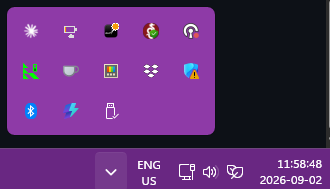

What Magic Tray does
- Battery percent for a Magic Mouse, Magic Keyboard or Magic Trackpad, beside the clock.
- Warnings at 10, 5 and 1 percent.
- Help with the mouse driver, only after you pick it and confirm.
Install it in five steps
- 1Pair your device
In Windows Bluetooth settings.
- 2Download the app
MagicMouseTray.exefrom GitHub. - 3Check the file
In PowerShell,
cdto Downloads and run(Get-FileHash MagicMouseTray.exe).Hash. It must match the SHA-256 inSHA256SUMSon the release page. - 4Run it
Double-click
MagicMouseTray.exe. - 5Click More info, then Run anyway
Windows may warn you the first time.
Windows hides new tray icons behind the ^ arrow. Open it and drag Magic Tray out.

Which page do I want?
- No percent for a mouse or trackpad
- No percent for a keyboard
- My mouse moves but won't scroll
- Which Apple device is this
- The 2024 USB-C mouse
Questions
What does Magic Tray do?
Magic Tray shows how much battery your Apple Magic Mouse, Magic Keyboard or Magic Trackpad has left, next to the Windows 10 or Windows 11 clock. It warns you at 10, 5 and 1 percent. It can also help an Apple mouse scroll again, after you confirm.
Is Magic Tray free?
Yes. MIT licensed, every line public on GitHub. No subscription, no trial, no account, no email address.
Is Magic Tray a free alternative to Magic Utilities?
Partly. Magic Tray is free and shows battery percent, and it can help a Magic Mouse scroll after you confirm. It has no gestures and no media-key remapping. Magic Utilities is paid and does gestures; if you want gestures, buy it.
How do I check my Apple Magic Mouse battery on Windows 10 or 11?
Pair the mouse in Windows Bluetooth settings, then download MagicMouseTray.exe and run it. A tray icon appears next to the clock with the percent beside it. Windows may hide it behind the ^ arrow, so drag it out. Full steps are on the battery page.
Does an Apple Magic Mouse work with Windows 11?
Yes. Pair it in Windows Bluetooth settings and it clicks and moves straight away. One-finger scrolling is the part Windows doesn't do; that needs a driver, the software Windows uses to talk to your mouse.
Does Magic Tray work on Windows 10?
Yes. Magic Tray runs on 64-bit Windows 10 version 1809 or newer, and on any Windows 11.
Is Magic Tray a desk stand?
No. Magic Tray is downloadable Windows software that sits beside your clock. It is not a desk tray, riser or cradle.
Is Magic Tray safe to install?
Every line is public on GitHub, so you can read what it does. Windows warns you on first run because nobody has paid for Microsoft's check, which costs money. It changes no driver until you pick one and confirm.
Do I need a Mac to use an Apple mouse or keyboard on Windows?
No. Everything here runs on Windows 10 or 11 alone. Apple's old mouse drivers are called Boot Camp, a Mac name, but you install them on Windows without owning a Mac.
Will Magic Tray change my drivers on its own?
No. Magic Tray only touches a driver after you pick it from the tray menu and confirm.